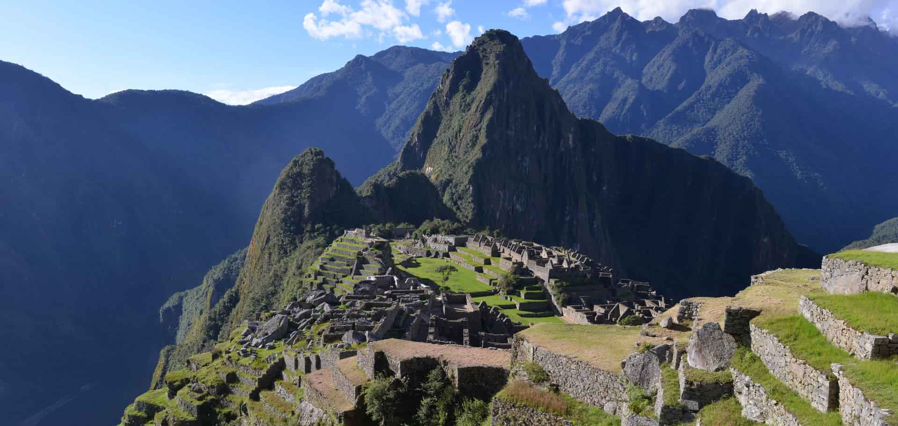

MACHU PICCHU

ARCHITECTURE
Machu Picchu, a UNESCO World Heritage Site, is a testament to the Incas'
architectural prowess. The ancient city is nestled high in the Andes Mountains
of Peru, its intricate stonework blending seamlessly with the rugged landscape.
The Incas employed a unique technique known as "dry stone masonry," where large,
precisely cut stones were fitted together without mortar. This method not only
ensured structural stability but also allowed the buildings to withstand
earthquakes and other natural disasters. The city's layout was carefully planned,
with terraced fields, irrigation systems, and a network of pathways connecting
various structures. The most iconic feature of Machu Picchu is the Temple of
the Sun, a circular structure with a large stone monolith at its center. The city's
architecture reflects the Incas' deep understanding of astronomy, as evidenced
by the alignment of buildings with celestial bodies.
T0URISM
Machu Picchu, a UNESCO World Heritage Site, is a popular tourist destination in Peru.
The ancient Inca city is renowned for its breathtaking architecture and stunning
natural beauty. To visit Machu Picchu, you'll typically need to fly to Cusco,
the nearest major city. From there, you can take a scenic train journey to
Aguas Calientes, the town closest to the ruins. Alternatively, for a more
adventurous experience, you can hike the famous Inca Trail. Once at Machu Picchu,
you can explore the ruins, visit the iconic Temple of the Sun, and hike Huayna Picchu
or Machu Picchu Mountain for panoramic views. Guided tours are also available to help
you learn more about the history and significance of the site. It's important to note
that Machu Picchu can get crowded, especially during peak season (June to August).
If you're looking for a less hectic experience, consider visiting during the shoulder
seasons (April, May, September, October) or the rainy season (December to March).
TOUR PACKAGE :
- 10 Member mega pack
- 5 Days , 6 Night
- All type of resort are available
- PRICE : Rs.4,00,000
For more information:
Contact:9080706050
Email:gtholidays@tourism.com
Book
Thank you for booking